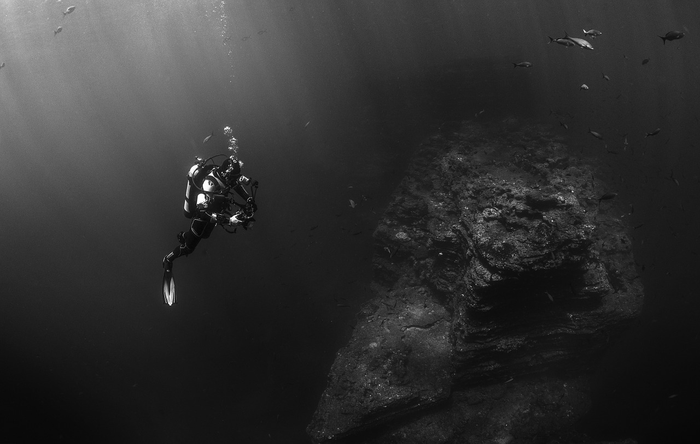

We live in civilized times that offer few opportunities for true, raw adventure, and few people have the means and the temperament to pursue the “astounding” in a world that often settles for the mediocre. Children who begin their lives with dreams of traveling through space or searching for historic treasures all too often find that as adults their dreams have been downsized and squeezed into conformity.
 There are an estimated three million shipwrecks scattered throughout the world’s waterways, many of them carrying cargoes of astounding historic and monetary value. MK Marine Explorations purpose is to identify, locate and recover cargoes of financially rewarding archaeological sites. Our mission is to do so in an environmentally and historically respectful manner, while providing the world with a first person experience into the wonders of maritime exploration through documentaries and an online database. We employ industry best practice standards with open dissemination of knowledge and transparency of intent. MK Marine Exploration’s goal is to create a permanent and lasting contribution to society with the recovery of beautiful artifact collections and lost chapters in history.
MK Marine Exploration is a recently formed professional marine exploration and salvage company whose purpose is to locate and recover cargoes of significant monetary and historic value. MK Marine Exploration has contracts secured and operations ready to launch immediately on a shipwreck site in Florida and many others in development both within and outside the United States. Our founding members are each highly respected with track records of success in the maritime exploration industry. With maritime researchers becoming a dying breed, MK’s founding members have been welcomed with open arms by the industry leaders. Each member possesses the background, imagination, and drive to translate ideas into reality.